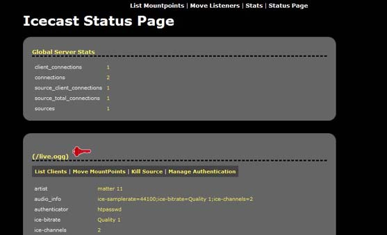

Listener authentication is a feature of Icecast which allows you to secure a certain mountpoint such that in order to listen, a listener must pass some verification test. With this feature, a simple pay-for-play operation (eg. user/pass), or some filtering based on the listener connection can be performed. This section will show you the basics of setting up and maintaining this component.
To define listener authentication, a group of tags are specified in the <mount> group relating to the mountpoint. This means
that authentication can apply to listeners of source clients or relays.
The following authentication mechanisms can apply to listeners:
The listener authentication within a specified mount in the icecast XML configuration can apply to either to a stream from a source client, relay or a webroot based file. They do apply to intro files or fallback streams.
In order to use listener authentication, you must configure a mount specific option. This means that you have to provide
a <mount> section in the main icecast config file. The following is an example:
<mount>
<mount-name>/example.ogg</mount-name>
<authentication type="htpasswd">
<option name="filename" value="myauth"/>
<option name="allow_duplicate_users" value="0"/>
</authentication>
</mount>To support listener authentication you must provide at a minimum <mount-name> and <authentication>.
The mount-name is the name of the mountpoint that you will use to connect your source client with and authentication configures
what type of Icecast authenticator to use.
Currently, only htpasswd and url are implemented. Each authenticator has a variable number of options that are required and
these are specified as shown in the example.
The htpasswd authenticator requires a few parameters:
The first, filename, specifies the name of the file to use to store users and passwords. Note that this file need not exist
(and probably will not exist when you first set it up).
Icecast has built-in support for managing users and passwords via the web admin interface. More on this later in this section.
The second option, allow_duplicate_users, if set to 0, will prevent multiple connections using the same username. Setting this
value to 1 will enable mutltiple connections from the same username on a given mountpoint.
Note there is no way to specify a “max connections” for a particular user.
Icecast supports a mixture of streams that require listener authentication and those that do not. Only mounts that are named in the config file can be configured for listener authentication.
Once the appropriate entries are made to the config file, connect your source client (using the mountpoint you named in
the config file). To configure users and passwords for this stream you must use the web-based admin interface. Navigate to
http://server:ip/admin/stats.xsl to begin. If you have configured everything properly, you should see a screen like the
following:

You will see a lock in front of all mountpoint configured for listener authentication. Also note that this page will only show connected mountpoints.
To manage users and passwords for this mountpoint, click on the “Manage Authentication” link. The following screen will be shown:

This screen will show all the users configured for this mountpoint. Adding users is as simple as entering a username and password
in the fields and clicking “Add New User”.
Note that usernames must be unique and there are no restrictions on passwords. You can delete users by clicking the appropriate
delete link next to each user.
Ok, so you’ve created your users, and you have everything setup properly, how do your users login? Well, we’ve provided a simple login
form that you can use for this purpose. This page (http://server:port/auth.xsl) will bring up a form that users can use to enter their
username and password.

This page will serve a m3u with the username and password and in most cases should open the correct media player and begin playing your stream.
Authenticating listeners via the URL method involves Icecast, when a listener connects, issuing requests to a web server and checking the response headers. If a certain header is sent back then the listener connecting is allowed to continue, if not, an error is sent back to the listener.
The URLs specified will invoke some web server scripts like PHP to do any work that they may choose to do. All that is
required of the scripting language is that POST information can be handled and response headers can be sent back.
libcurl is used for the requesting so https connections may be possible, but be aware of the extra overhead involved.
The useragent sent in each curl request will represent the Icecast server version. The response headers will depend on
whether the listener is to be accepted. In the case of rejection, a response header
icecast-auth-message: reason
should also be returned for placing in the log files.
In order to use URL based listener authentication, you must configure a mount specific option. This means that you
have to provide a <mount> section in the main Icecast config file. The following shows the list of options available:
<mount>
<mount-name>/example.ogg</mount-name>
<authentication type="url">
<option name="mount_add" value="http://myauthserver.com/stream_start.php"/>
<option name="mount_remove" value="http://myauthserver.com/stream_end.php"/>
<option name="listener_add" value="http://myauthserver.com/listener_joined.php"/>
<option name="listener_remove" value="http://myauthserver.com/listener_left.php"/>
<option name="username" value="user"/>
<option name="password" value="pass"/>
<option name="auth_header" value="icecast-auth-user: 1"/>
<option name="timelimit_header" value="icecast-auth-timelimit:"/>
</authentication>
</mount>The options are described below in more detail, each of which is optional, but in each case, within the POST data, the value for each setting is encoded.
This URL is for informing the auth server of a stream starting. No listener information is passed for this, but it can be used to initialise any details the auth server may have.
POST Details are
action=mount_add&mount=/live&server=myserver.com&port=8000
Here the details indicate the server name (<hostname>) and mountpoint starting up
This URL is for informing the auth server of a stream finishing, like the start option, no listener details are passed.
POST Details are
action=mount_remove&mount=/live&server=myserver.com&port=8000
like the start option, server name and mountpoint are provided
This is most likely to be used if anything. When a listener connects, before anything is sent back to them, this
request is processed. The default action is to reject a listener unless the auth server sends back a response header
which may be stated in the header option.
POST details are
action=listener_add&server=myserver.com&port=8000&client=1&mount=/live&user=&pass=&ip=127.0.0.1&agent="My%20player"
There are more details with this, client is the unique ID for the client within icecast, user and pass may be blank but come from the HTTP basic auth that the listener states, ip is the listeners IP address and agent is the Useragent from the listeners player.
The mount here (unlike the start/end options) states the requested url including any query
parameters, so for instance the requested URL can be /stream.ogg&session=xyz, but note that
each option data is escaped before being passed via POST.
This URL is for when a listener connection closes.
POST details are
action=listener_remove&server=myserver.com&port=8000&client=1&mount=/live&user=&pass=&duration=3600
Again this is similar to the add option, the difference being that a duration is passed reflecting the number of seconds the listener was connected for
The expected response header to be returned that allows the authencation to take place may be specified here.
The default is:
icecast-auth-user: 1
but it could be anything you like, for instance:
HTTP 200 OK
Listeners could have a time limit imposed on them, and if this header is sent back with a figure (which represents seconds) then that is how long the client will remain connected for.
We do not have an exaustive list of players that support listener authentication.
We use standard HTTP basic authentication, and in general, many media players support this if they support anything at all.
Winamp and Foobar2000 support HTTP basic authentication on Windows, and XMMS supports it on UNIX platforms. Winamp/XMMS at least support the passing of query parameters, other players may also do.

© 2004-2014 Xiph.Org. All rights reserved.